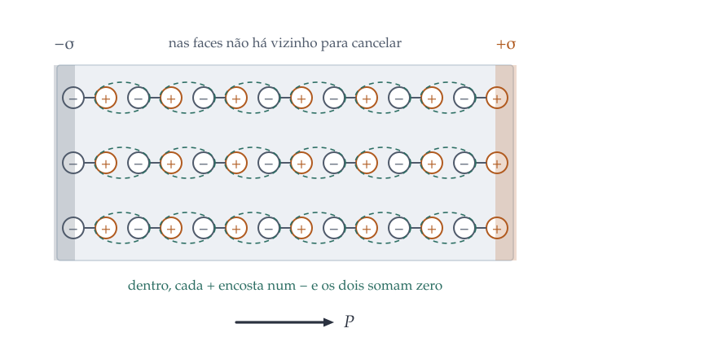

Polarização, cargas ligadas, o deslocamento elétrico e os dielétricos lineares, com as condições de contorno que eles impõem.
1. Como a matéria responde
Até aqui, a matéria apareceu em duas formas extremas: o vácuo, que não faz
nada, e o condutor, que faz tudo, cancelando o campo no interior. Falta o caso
intermediário, que é o da maioria das substâncias: o isolante, onde as cargas
não podem viajar mas podem se deslocar um pouco.
Esse "um pouco" é o assunto do capítulo, e ele acontece por dois mecanismos
diferentes.
Átomos que se deformam
Num átomo neutro, a nuvem eletrônica está centrada no núcleo. Com campo
externo, o núcleo é empurrado para um lado e a nuvem para o outro, até que a
atração entre elas equilibre o campo aplicado. O átomo fica com um momento de
dipolo
\[ \vet{p} = \alpha\vet{E}, \]
com \(\alpha\) a polarizabilidade atômica, tabelada para cada elemento. Ela
tem dimensão de \(\varepsilon_0\) vezes volume, e o volume em questão é, com boa
aproximação, o do próprio átomo.
Exemplo trabalhado: estimando \(\alpha\) com um modelo de
criança. Trate o átomo como um núcleo pontual \(+q\) no centro de uma
nuvem esférica uniforme de carga \(-q\) e raio \(a\). Aplique um campo
\(\vet{E}\) e veja o quanto o núcleo se desloca.
Dentro de uma esfera uniformemente carregada, o campo a uma distância \(d\)
do centro vale, pela lei de Gauss,
O valor experimental é \(0{,}667\times10^{-30}\ \mathrm{m^3}\), ou seja, o
modelo erra por um fator 4,5. Para um modelo que trata a nuvem eletrônica como
uma bola de bilhar uniforme, errar por um fator 4 e acertar a ordem de
grandeza e a dependência com o volume é um resultado respeitável. A conta
quântica certa dá \(4{,}5\,a_0^3\), e o fator que falta é exatamente esse.
Moléculas que giram
Algumas moléculas já têm momento de dipolo permanente, sem campo nenhum: a
água, com \(p = 6{,}1\times10^{-30}\ \mathrm{C\,m}\), é o exemplo canônico. Para
elas, o campo não precisa induzir nada, basta alinhar, e o mecanismo é o torque
que o capítulo 6 vai reencontrar no magnetismo:
\[ \vet{\tau} = \vet{p}\cruz\vet{E},\qquad U = -\vet{p}\cdot\vet{E}. \]
A competição aqui é com a agitação térmica, e o resultado é uma
susceptibilidade que cai com \(1/T\). Num campo forte de laboratório,
\(10^{6}\ \mathrm{V/m}\), a energia de alinhamento da água vale
\(6{,}1\times10^{-24}\ \mathrm{J}\) contra \(4{,}1\times10^{-21}\ \mathrm{J}\) de
energia térmica a 300 K: uma parte em setecentas. O alinhamento é sempre
parcial, e é por isso que até a água, com o maior dipolo da química cotidiana,
tem polarização muito menor do que o alinhamento total daria.
Num campo não uniforme há ainda uma força resultante, \(\vet{F} =
\left(\vet{p}\cdot\nabla\right)\vet{E}\), e é ela que explica o jato de água
desviado por um canudo atritado: o canudo polariza as moléculas e depois atrai
os dipolos que ele mesmo criou, sempre para a região de campo mais
intenso.
2. Carga ligada, e o campo do objeto polarizado
Chame de polarização o momento de dipolo por unidade de
volume,
\[ \vet{P} = \frac{d\vet{p}}{d\tau}. \]
A pergunta é: qual é o campo produzido por um objeto polarizado? A resposta
é mais simples do que parece, e tem a mesma estrutura do capítulo 6.
O potencial de um dipolo é \(\frac{1}{4\pi\varepsilon_0}
\frac{\vet{p}\cdot\vers{\imath}}{\imath^2}\). Somando sobre o volume,
\[ V = \frac{1}{4\pi\varepsilon_0}\int
\frac{\vet{P}\cdot\vers{\imath}}{\imath^2}\,d\tau'. \]
Usando \(\nabla'(1/\imath) = \vers{\imath}/\imath^2\) e integrando por
partes, como o capítulo 1 ensinou, o integrando se separa em dois termos: um de
superfície e um de volume. O resultado é que
e o potencial do objeto polarizado é exatamente o de duas
distribuições de carga comuns, uma na superfície e outra no volume.
Carga ligada é carga de verdade
Não há nada de fictício nessas cargas. Pense numa fileira de dipolos
alinhados dentro do material: a ponta positiva de cada um encosta na ponta
negativa do vizinho, e as duas se cancelam. Isso vale em todo ponto onde
\(\vet{P}\) é uniforme, e é por isso que \(\rho_b\) só não é nulo onde a
polarização varia. Nas faces, porém, não há vizinho para cancelar, e sobra
carga de verdade, que se pode medir e que produz campo.
É o mesmo argumento, palavra por palavra, que o capítulo 6 usa para a
corrente ligada \(\vet{K}_b = \vet{M}\cruz\vers{n}\). As duas figuras são
irmãs.

Dentro, cada ponta positiva encosta numa negativa e as duas se
anulam; nas faces não há vizinho, e sobra carga de verdade.
Exemplo trabalhado: a esfera uniformemente polarizada. Uma
esfera de raio \(R\) tem polarização uniforme \(\vet{P} = P\vers{z}\). Ache o
campo dentro e fora.
Com \(\vet{P}\) uniforme, \(\rho_b = -\divg{\vet{P}} = 0\): não há carga
ligada no volume. Na superfície,
que é puro \(P_1\) na base de Legendre. O problema virou, então, o de achar o
potencial de uma casca esférica com densidade \(\sigma = P\cos\theta\), e isso o
capítulo 3 resolve de olhos fechados: a série de Legendre só pode ter o termo
\(l = 1\), pela ortogonalidade.
Escrevendo \(V_{\text{in}} = A r\cos\theta\) e \(V_{\text{out}} =
B\cos\theta/r^2\), a continuidade em \(r=R\) dá \(AR = B/R^2\), e o salto da
derivada normal dá
uniforme e contra a polarização, e fora o campo é o de um dipolo
puro de momento \(p = \frac{4}{3}\pi R^3P\), isto é, \(\vet{P}\) vezes o
volume.
Guarde o fator 1/3. Ele é o fator de despolarização da
esfera, o mesmo que aparece no capítulo 6 como \(\vet{H} = -\vet{M}/3\). Para
outras formas ele muda: vale 1 para uma placa fina polarizada
perpendicularmente, e 0 para um bastão longo polarizado ao longo do eixo. Quanto
mais alongado na direção da polarização, menor o campo despolarizante, e é por
isso que ímãs e eletretos são compridos.
3. O deslocamento elétrico
Dentro de um dielétrico há dois tipos de carga: a ligada, que veio da
polarização, e a livre, que alguém pôs lá. A lei de Gauss não distingue as
duas, porque campo é campo:
Isso é muito conveniente, porque a carga livre é a que se conhece: é a que
foi posta nas placas do capacitor, a que veio pelo fio.
Três armadilhas do D
D não é um campo como E. O rotacional de \(\vet{D}\) é
\(\rot{\vet{P}}\), que não é nulo em geral. Logo não existe potencial
para \(\vet{D}\), e não vale escrever \(\vet{D} = -\nabla U\).
D não é determinado só pela carga livre. A lei de Gauss dá o
divergente; faltam o rotacional e as condições de contorno. Dois problemas com a
mesma carga livre podem ter \(\vet{D}\) diferente se a geometria do dielétrico
for diferente.
A simetria tem de ser do conjunto. Usar
\(\oint\vet{D}\cdot d\vet{a} = Q_f\) para tirar \(\vet{D}\) da integral exige
que a simetria valha para a carga livre e para o dielétrico. Com um
pedaço de vidro de lado, a conta não vale, por mais simétrica que seja a
carga.
4. Meios lineares
Para a maioria dos materiais, e para campos não muito fortes, a polarização é
proporcional ao campo:
\[ \vet{P} = \varepsilon_0\chi_e\vet{E}, \]
com \(\chi_e\) a susceptibilidade elétrica, adimensional e positiva.
Substituindo na definição de \(\vet{D}\),
com \(\varepsilon_r\) a constante dielétrica, que é o número tabelado. Alguns
valores a 20 °C: ar, 1,00059; papel, 3,7; vidro, 4 a 7; água, 80,1.
A água se destaca por duas ordens de grandeza, e a razão é o dipolo
permanente: nos outros materiais da lista o mecanismo é a deformação dos
átomos, e nela o deslocamento é minúsculo. É também por isso que a constante
dielétrica da água cai com a temperatura, enquanto a do vidro quase não
muda.
Condições de contorno
Na interface entre dois dielétricos, sem carga livre na superfície,
A componente normal de \(\vet{D}\) é contínua porque não há carga livre; a
tangencial de \(\vet{E}\), porque o rotacional dele é nulo. Repare que são
campos diferentes em cada condição, e trocá-los é o erro mais comum do
capítulo.
Exemplo trabalhado: a esfera dielétrica num campo uniforme.
Uma esfera de constante dielétrica \(\varepsilon_r\) e raio \(R\) é posta num
campo uniforme \(E_0\vers{z}\). Ache o campo dentro.
Não há carga livre em lugar nenhum, de modo que \(V\) satisfaz Laplace dentro
e fora, e a solução é a série de Legendre do capítulo 3. Longe, o potencial tem
de voltar a \(-E_0r\cos\theta\), o que fixa o termo \(l=1\); e como a fonte é
puro \(P_1\), nenhum outro \(l\) é excitado. Então
uniforme, na mesma direção do campo aplicado, e menor que ele.
Os limites conferem. Com \(\varepsilon_r = 1\) não há
material e o campo interno é \(E_0\). Com \(\varepsilon_r \to \infty\), que é o
condutor, o campo interno vai a zero, como manda o capítulo 2. Para a água,
\(\varepsilon_r = 80\), o campo dentro de uma gota é
\(3E_0/82 \approx 0{,}037E_0\): a gota blinda 96 % do campo aplicado.
O termo \(B\) é o de um dipolo, e dele se lê a polarizabilidade da esfera
inteira: \(\alpha_{\text{esfera}} = 4\pi\varepsilon_0R^3
\frac{\varepsilon_r-1}{\varepsilon_r+2}\). Essa fração é a relação de
Clausius-Mossotti, e é ela que liga a constante dielétrica macroscópica à
polarizabilidade molecular.
5. Energia e forças
Com dielétrico linear, a energia guardada no campo ganha uma forma
compacta:
\[ W = \frac{1}{2}\int \vet{D}\cdot\vet{E}\,d\tau
= \frac{\varepsilon}{2}\int E^2\,d\tau. \]
Repare que ela não é \(\frac{\varepsilon_0}{2}\int E^2\): a diferença
é a energia gasta para polarizar o material, isto é, para esticar cada átomo.
Essa parcela é real e recuperável, e é por isso que ela entra na conta.
A consequência prática é a capacitância. Preenchendo um capacitor com
dielétrico de constante \(\varepsilon_r\), a mesma carga livre produz um campo
\(\varepsilon_r\) vezes menor, a tensão cai na mesma proporção, e
\[ C = \varepsilon_r C_0. \]
É o motivo de todo capacitor comercial ter um dielétrico dentro: ele aumenta
a capacitância e, de quebra, aumenta a tensão de ruptura, porque o material
suporta campos maiores que o ar.
Exemplo trabalhado: o capacitor que engole a placa. Um
capacitor de placas paralelas, de largura \(w\) e separação \(d\), tem uma placa
de dielétrico parcialmente inserida, cobrindo um comprimento \(x\) das placas.
Com a carga fixa, qual a força sobre o dielétrico?
A capacitância é a soma das duas partes, em paralelo:
Com carga fixa, a energia é \(W = Q^2/2C\), e a força é menos o gradiente da
energia:
\[ F = -\der{W}{x} = \frac{Q^2}{2C^2}\der{C}{x}
= \frac{Q^2}{2C^2}\,\frac{\varepsilon_0w(\varepsilon_r-1)}{d}. \]
Como \(dC/dx \gt 0\), a força é positiva: o dielétrico é
puxado para dentro. Isso vale também com tensão fixa, embora a conta pareça dar
o contrário se feita sem cuidado, porque aí a bateria fornece energia e o sinal
de \(dW/dx\) engana.
De onde vem a força, fisicamente? Não é do campo uniforme
entre as placas, que é paralelo à placa dielétrica e não puxa nada. Vem do campo
de borda, aquele que escapa nas extremidades e que todo mundo desenha torto e
ignora. Ele é não uniforme, e sobre os dipolos induzidos age
\(\left(\vet{p}\cdot\nabla\right)\vet{E}\), que aponta para dentro. É um caso em
que o resultado é obtido com segurança pela energia, e a explicação local exige
justamente o efeito que todo mundo despreza.
Números. Com \(w = 5{,}0\ \mathrm{cm}\),
\(d = 1{,}0\ \mathrm{mm}\), \(\varepsilon_r = 4\) (vidro),
\(\ell = 10\ \mathrm{cm}\), \(x = 5{,}0\ \mathrm{cm}\) e
\(Q = 20\ \mathrm{nC}\): a capacitância vale \(1{,}11\times10^{-10}\
\mathrm{F}\), e a força dá \(F = 2{,}2\times10^{-5}\ \mathrm{N}\), ou cerca de
2 miligramas-força. Pequena, mas perfeitamente mensurável numa balança de
torção, e ela cresce com o quadrado da carga.
Resolve a esfera dielétrica num campo uniforme pela série de Legendre e
confere o resultado por relaxação numa grade, sem usar a série.
Confira assim: o campo interno tem de ser uniforme e
valer \(3E_0/(\varepsilon_r+2)\); os limites \(\varepsilon_r \to 1\) e
\(\varepsilon_r \to \infty\) têm de dar \(E_0\) e zero; e a relaxação tem de
reproduzir os dois.
Calcula \(\rho_b\) e \(\sigma_b\) para polarizações dadas, incluindo as
não uniformes, e integra tudo.
Confira assim: a carga ligada total tem de ser
rigorosamente nula, volume mais superfície, para qualquer \(\vet{P}\); e o
campo obtido somando as cargas ligadas tem de dar
\(-\vet{P}/3\varepsilon_0\) dentro da esfera uniformemente polarizada.
7. Exercícios propostos
Os enunciados são nossos, e as soluções estão aqui mesmo, recolhidas. Resolva antes de abrir: ler solução pronta dá a sensação de ter entendido, que é diferente de ter entendido.
4.1 Quanto o átomo se estica, de verdade
Use o modelo da nuvem uniforme para estimar o deslocamento \(d\) entre
o núcleo e o centro da nuvem de um átomo de hidrogênio
(\(a = 0{,}53\ \text{Å}\)) num campo de \(1{,}0\times10^{6}\
\mathrm{V/m}\), que é um campo forte de laboratório. Compare \(d\) com o
tamanho do átomo e com o tamanho de um núcleo.
Ver solução
Do equilíbrio entre o campo aplicado e o restaurador da nuvem,
\[ d = \frac{4\pi\varepsilon_0 a^3 E}{q}
= \frac{a^3 E}{\left(1/4\pi\varepsilon_0\right)q}. \]
Com \(a^3 = 1{,}49\times10^{-31}\ \mathrm{m^3}\),
\(E = 10^{6}\ \mathrm{V/m}\), \(q = 1{,}60\times10^{-19}\ \mathrm{C}\) e
\(1/4\pi\varepsilon_0 = 8{,}99\times10^{9}\):
\[ d = \frac{1{,}49\times10^{-31}\times10^{6}}
{8{,}99\times10^{9}\times1{,}60\times10^{-19}}
= 1{,}0\times10^{-16}\ \mathrm{m}. \]
As comparações. O átomo tem \(5{,}3\times10^{-11}\) m, de modo
que o deslocamento é duas partes em um milhão do raio atômico. E o núcleo
do hidrogênio tem cerca de \(1{,}7\times10^{-15}\) m, ou seja, o
deslocamento é dezesseis vezes menor que o próprio núcleo.
Isso explica duas coisas. Primeiro, por que a resposta é linear: um
deslocamento tão pequeno está no começo de qualquer curva, onde tudo é
reta. Segundo, por que polarização eletrônica é rápida: a nuvem não precisa
ir longe, e acompanha campos até frequências ópticas, o que é a origem do
índice de refração.
4.2 Carga ligada de uma polarização que varia
Uma esfera de raio \(R\) tem polarização radial que cresce com a
distância ao centro, \(\vet{P} = k\,r\,\vers{r}\). Calcule \(\rho_b\) e
\(\sigma_b\), mostre que a carga ligada total é nula e ache o campo dentro
e fora.
como tinha de ser: polarizar não cria carga, só a desloca.
O campo. Fora, a carga total é nula e, por simetria esférica,
\(\vet{E} = 0\). Dentro, a carga enlaçada por uma gaussiana de raio \(r\)
é \(-3k\cdot\frac43\pi r^3 = -4\pi kr^3\), e
Confira pelo outro caminho: com \(\rho_f = 0\) e simetria esférica,
\(\vet{D} = 0\) em toda parte, e de \(\vet{D} = \varepsilon_0\vet{E} +
\vet{P}\) sai imediatamente \(\vet{E} = -\vet{P}/\varepsilon_0\). Os dois
caminhos concordam, e o segundo é bem mais rápido.
4.3 O capacitor com dois dielétricos
Um capacitor de placas paralelas de área \(A\) e separação \(d\) é
preenchido com duas camadas de dielétrico, de constantes
\(\varepsilon_{r1}\) e \(\varepsilon_{r2}\) e espessuras \(d_1\) e
\(d_2 = d - d_1\), empilhadas paralelamente às placas. Ache a capacitância
e explique por que o resultado é o de capacitores em série.
Ver solução
Com carga livre \(Q\) nas placas, uma gaussiana achatada dentro de
cada camada enlaça a mesma carga livre, de modo que
\[ D = \frac{Q}{A} \quad\text{nas duas camadas}. \]
Por que em série. As duas camadas carregam a mesma carga livre e
as tensões se somam, que é exatamente a definição de associação em série.
Compare com o exemplo do dielétrico parcialmente inserido, em que as partes
dividem a tensão e somam a carga: aquilo é paralelo.
Consequência prática. A camada de menor \(\varepsilon_r\) fica
com o maior campo, e é nela que o capacitor rompe. Uma bolha de ar de 10 µm
dentro de um isolante de \(\varepsilon_r = 4\) sustenta quatro vezes o campo
do material em volta, e é por isso que bolhas são o pesadelo da fabricação
de capacitores de alta tensão.
4.4 A gota de água no campo
Uma gota esférica de água (\(\varepsilon_r = 80\)) de raio
\(1{,}0\ \mathrm{mm}\) está num campo uniforme de \(5{,}0\times10^{4}\
\mathrm{V/m}\). Calcule o campo dentro da gota, a polarização, o momento de
dipolo induzido e a carga ligada máxima na superfície.
A carga ligada máxima, nos polos, é
\(\sigma_b = P\cos\theta\) com \(\cos\theta = 1\), isto é
\(1{,}28\ \mu\mathrm{C/m^2}\).
Leitura. A gota blinda 96 % do campo aplicado, e o dipolo
induzido é \(9\times10^{14}\) vezes maior que o de uma molécula de água
isolada (\(6{,}1\times10^{-30}\) C m). Não há contradição: a gota tem
cerca de \(1{,}4\times10^{20}\) moléculas, de modo que o alinhamento
corresponde a umas seis moléculas em cada milhão.
4.5 Por que o D não tem potencial
Dê um exemplo concreto em que \(\rot{\vet{D}} \ne 0\), e explique por
que, mesmo assim, \(\divg{\vet{D}} = \rho_f\) continua valendo. Em seguida
diga o que daria errado se alguém escrevesse \(\vet{D} = -\nabla U\) e
tentasse resolver um problema com isso.
Ver solução
O exemplo. Tome um bastão de eletreto, isto é, um material
com polarização permanente \(\vet{P}\) congelada, sem carga livre nenhuma.
Fora dele, \(\vet{P} = 0\) e \(\vet{D} = \varepsilon_0\vet{E}\); dentro,
\(\vet{D} = \varepsilon_0\vet{E} + \vet{P}\).
Como \(\rot{\vet{E}} = 0\) sempre em eletrostática,
\[ \rot{\vet{D}} = \rot{\vet{P}}, \]
que não é nulo se \(\vet{P}\) variar de direção, como acontece num
eletreto curvo ou numa amostra com polarização não uniforme.
Por que o divergente continua valendo. A lei
\(\divg{\vet{D}} = \rho_f\) saiu da lei de Gauss e da definição de carga
ligada, sem nenhuma hipótese sobre o rotacional. As duas informações são
independentes: uma diz onde \(\vet{D}\) nasce, a outra diz se ele
circula.
O que daria errado. Escrever \(\vet{D} = -\nabla U\) impõe
rotacional nulo, o que é falso no caso acima, e a solução obtida não
satisfaria as condições de contorno corretas. Pelo teorema de Helmholtz do
capítulo 1, conhecer só o divergente nunca determina um campo: é preciso
o rotacional também. \(\vet{D}\) é uma conveniência de contabilidade da
carga livre, e não um campo fundamental.
4.6 O fator de despolarização muda com a forma
O exemplo do texto achou \(\vet{E} = -\vet{P}/3\varepsilon_0\) dentro de
uma esfera uniformemente polarizada. Mostre, por um argumento de lei de
Gauss, que uma placa fina polarizada perpendicularmente às faces tem
\(\vet{E} = -\vet{P}/\varepsilon_0\), e que um bastão longo polarizado ao
longo do eixo tem \(\vet{E} \approx 0\) no meio. Comente o que isso
significa para o projeto de ímãs permanentes.
Ver solução
A placa. Com \(\vet{P}\) uniforme e perpendicular às faces,
\(\rho_b = 0\) e as faces têm \(\sigma_b = \pm P\). Isso é exatamente um
capacitor de placas paralelas com essas densidades, e o campo entre elas
vale
\[ E = \frac{\sigma_b}{\varepsilon_0} = \frac{P}{\varepsilon_0}, \]
apontando da face positiva para a negativa, isto é, contra
\(\vet{P}\). Logo \(\vet{E} = -\vet{P}/\varepsilon_0\), e o fator de
despolarização é 1.
O bastão. Agora as cargas ligadas estão nas duas pontas,
separadas por um comprimento grande. No meio do bastão, cada ponta está
longe, e o campo de uma carga distante cai com o quadrado da distância: o
resultado tende a zero quando o comprimento cresce. O fator de
despolarização tende a 0.
Para ímãs, que é o caso análogo do capítulo 6. O campo
despolarizante trabalha contra a própria magnetização e pode desmagnetizar
o material. Quanto mais achatada a peça na direção da magnetização, maior
esse campo contrário; quanto mais alongada, menor. Daí a forma clássica dos
ímãs permanentes antigos, que são barras compridas ou ferraduras, e daí o
fato de ímãs de geladeira, que são finos, precisarem de materiais de
coercividade altíssima para sobreviver ao próprio campo
desmagnetizante.